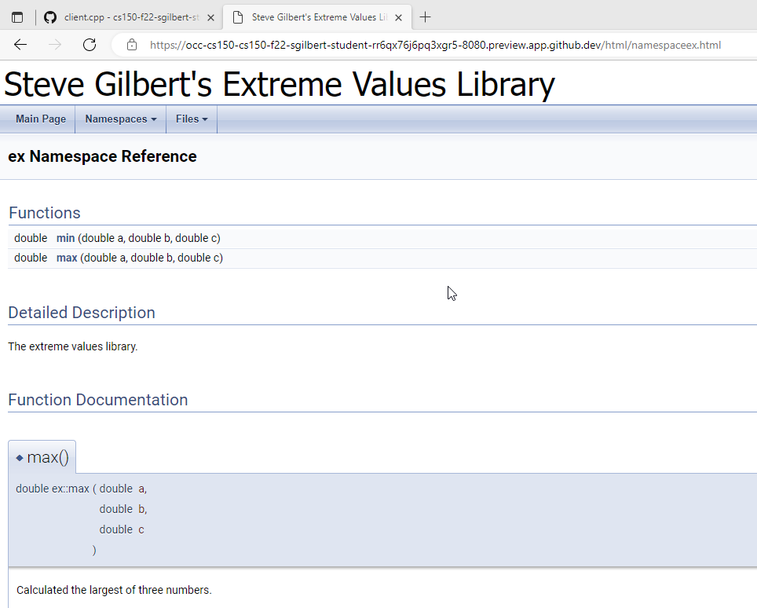

Running Doxygen
If you are using the Codespaces IDE, you can see if Doxygen is installed by using the command: doxygen. If you see this:
bash: doxygen: command not found
then Doxygen is not installed in your instance. Install it like this:
Reading package lists... Done
... more stuff ...
After this operation, 20.0 MB of additional disk space will be used. Do you want to continue? [Y/n]
Type Y and press ENTER and it will be installed for your current session. Type doxygen again, and you'll see a list of the program's options. Here are the ones you want to use:
- Type doxygen -g to generate a configuration file named Doxyfile. You can change its name if you like.
- In the configuration file, you might want to change these items. Just open it with your text editor, make the changes and save it.
- Change the Project Name to something appropriate
- Set Brief Member Desc to NO
- Set Javadoc auto brief to YES
- Set Warn no param doc to YES
- Set Generate Latex to NO
- Set Have Dot to NO
- Browse through the rest of the configuration file, and the online configuration help, to further customize your configuration. Save the configuration file, so you don't need to reconfigure if you need to install Doxygen again.
After you've created your configuration file, put it in the folder with your documented library files. Type the command doxygen Doxyfile and Doxygen will process your files and produce a new folder inside your project folder, named html.
To view your files (inside the CodeSpaces IDE), just type http-server in the terminal window and Control-Click the link that it provides you. Navigate to the index.html file in the html folder and click it, and you'll see the documentation for your library. When you're done looking at it, stop the http-server by typing Control-C in the terminal window.

 This course content is offered under a
CC
Attribution Non-Commercial license. Content in this course
can be considered under this license unless otherwise noted.
This course content is offered under a
CC
Attribution Non-Commercial license. Content in this course
can be considered under this license unless otherwise noted.